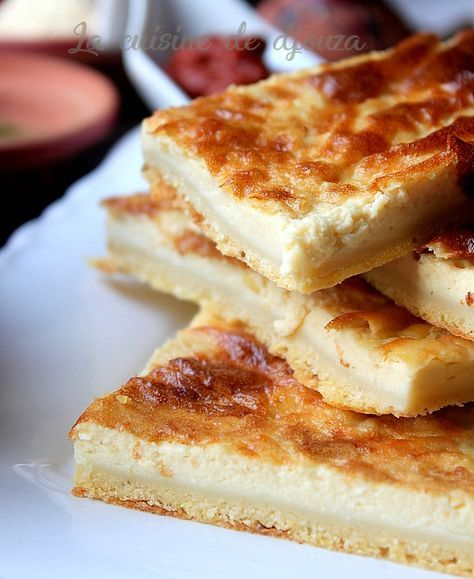

Karantika
Karantika is an iconic Algerian street food sold throughout Algeria by street vendors.
It has similarities to pies, pancakes, and flans and consists of a chickpea batter topped with beaten
egg and baked, and is served with harissa and cumin either hot on bread as a sandwich,
or sliced into squares.

Ingredients (8)
- 2 cups chickpea flour
- 4 cups water
- 1/2 cup oil (not olive oil)
- 1 tablespoon salt
- 1/4 teaspoon black pepper
- 1 egg, beaten
- ground cumin, for sprinkling
- harissa (optional)
Steps:
- Combine flour, water, oil, salt and pepper in food processor until mixture is smooth.
- Pour into glass or metal pan at least 6x10-inch.
- Pour the beaten egg over.
- Bake 375° for 1 hour or until top becomes golden.
- Sprinkle with cumin.
- Slice and serve on baguette with harissa or other hot sauce.